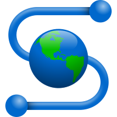

Paradigmas de Programação
Bem-Vindos a minha Página HTML
Durante as aulas de Paradigmas de Programação vamos aprender a desenvolver aplicações para Internet
utilizando técnicas de HTML, CSS e ASP.NET

Mosaic - Foi o primeiro navegador a rodar no Windows, fator determinante para a abertura da web
para o público em geral. Marc Andreessen, o líder do time que desenvolveu o Mosaic, saiu da
NCSA e, com Jim Clark, um dos fundadores da Silicon Graphics, Inc. (SGI) e outros quatro
estudantes formados e nomeados da Universidade de Illinois, iniciaram o Mosaic Communications
Corporation. Mosaic Communications finalmente se tornou a Netscape Communications
Corporation, produzindo o Netscape Navigator.
 Netscape - O Netscape trouxe todas as características que um browser moderno oferece nos dias
de hoje, como por exemplo a navegação por abas, o bloqueio de pop ups, suporte a cookies e
histórico de visitas, entre outros. Reinou absoluto durante anos, mas já em 2002 seus usuários se
resumiam a alguns poucos gatos pingados. Um dos motivos foi o fato da Microsoft passar a incluir,
já em 1995, o Internet Explorer junto com o sistema operacional Windows.
Netscape - O Netscape trouxe todas as características que um browser moderno oferece nos dias
de hoje, como por exemplo a navegação por abas, o bloqueio de pop ups, suporte a cookies e
histórico de visitas, entre outros. Reinou absoluto durante anos, mas já em 2002 seus usuários se
resumiam a alguns poucos gatos pingados. Um dos motivos foi o fato da Microsoft passar a incluir,
já em 1995, o Internet Explorer junto com o sistema operacional Windows.
 Chrome - Depois de muita especulação, o Google finalmente se lança no mercado de
navegadores em setembro do ano passado com o Chrome, um navegador 'projetado do
zero' e com a promessa de ser mais rápido, seguro e estável que os concorrentes.
Chrome - Depois de muita especulação, o Google finalmente se lança no mercado de
navegadores em setembro do ano passado com o Chrome, um navegador 'projetado do
zero' e com a promessa de ser mais rápido, seguro e estável que os concorrentes.